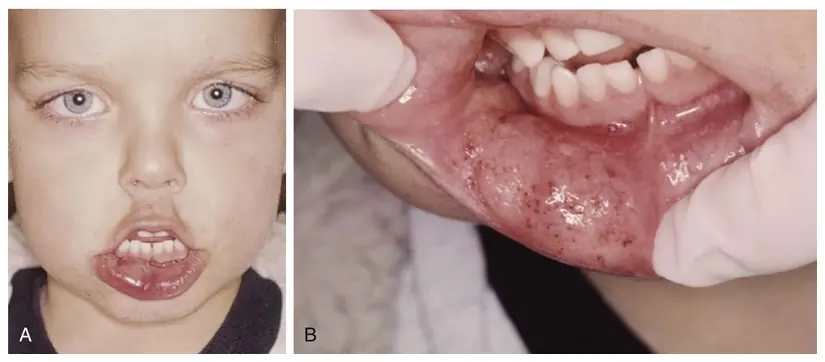

نسخه استخراجشده؛ ترجمه یا تأیید علمی انجام نشده است. وضعیت: captured
دختری ۶ ساله برای ترمیم مولر شیری پایین با بلاک عصب آلوئولار تحتانی (IANB) و لیدوکائین ۲٪ با اپینفرین بیحس شد. دو ساعت بعد مادرش عکسی میفرستد: لب پایین متورم و زخم است و کودک از درد گریه میکند. چه رخ داده است؟

بیحسی بافت نرم خیلی بیشتر از پالپ میماند. با لیدوکائین ۲٪ و اپینفرین، پالپ حدود ۶۰ دقیقه و لب و زبان ۳ تا ۵ ساعت بیحساند؛ پس بیمار معمولاً با لب بیحس از مطب میرود و ممکن است لب، زبان یا گونه را گاز بگیرد، بیآنکه دردی حس کند.
پس از IANB در کودکان، شیوع زیر ۴ سال حدود ۱۸٪، در ۴ تا ۷ سال ۱۶٪، در ۸ تا ۱۱ سال ۱۳٪ و از ۱۲ سال به بعد ۷٪ است. بیشترِ آسیبها در لب پایین است، کمتر در زبان و بهندرت در لب بالا.
کودک لب سالم را گاز میگیرد و درد دارد؛ بعد سمت بیحس را گاز میگیرد و دردی ندارد. بزرگسال همینجا دست میکشد، ولی کودک با این حس تازه بازی میکند و هر بار محکمتر گاز میگیرد. وقتی بیحسی میرود، ورم و درد شدید میآید و کودک ممکن است بیقرار شود.
اشتباه رایج: لب متورم و زخمیِ فردا را «عفونت» بدانی و آنتیبیوتیک بدهی. اطمینان بده و درمان علامتی را توضیح بده.